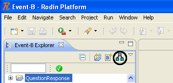
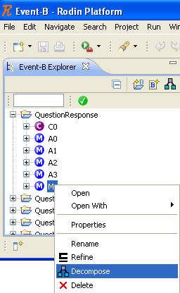
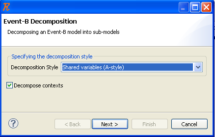
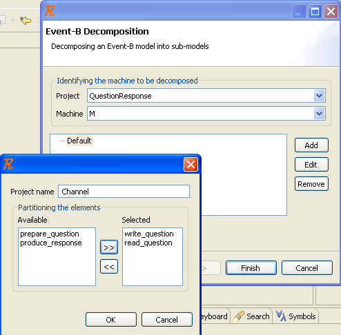
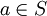
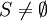
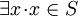
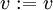
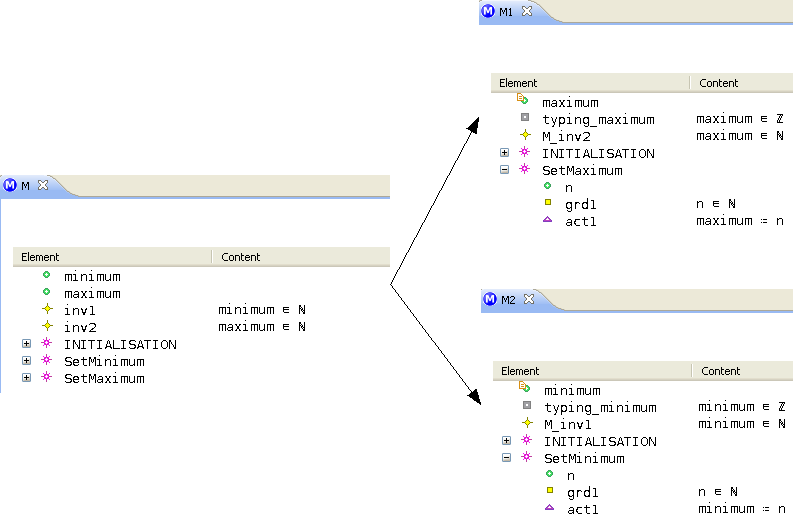
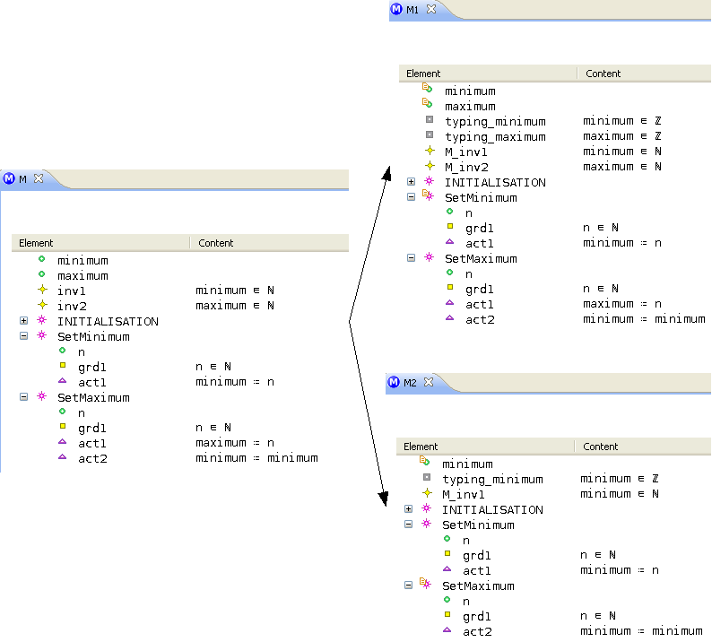

Introduction
The Decomposition plug-in allows to decompose a model into sub-models.
See the
Event-B Model Decomposition page for technical details on
shared variables (A-style) decomposition.
Installing and Updating
{{TODO | Not yet released, waiting for Rodin 1.2}}
Setup
The following steps will guide you through the setup process:
- Download Rodin for your platform from
Sourceforge:
- Extract the downloaded zip file.
- Start Rodin from the folder where you extracted the zip file in the previous step.
- Install the Decomposition plug-in:
- In the menu choose
Help ->
Software Updates...
- Select the tab
Available Software and click
Add Site...
- Use the location URL:
http://rodin-b-sharp.sourceforge.net/updates
- Back in
Available Software open the update site you just added
- Select
Event-B Decomposition and click
Install...
- Restart Rodin as suggested.
Now you are ready to use the Decomposition plug-in.
Update
The following steps will guide you through the update process:
- In Rodin open the preferences (
Window ->
Preferences or for Mac:
Rodin ->
Preferences)
- Find
Install/Update ->
Automatic Updates
- Select
Automatically find new updates and notify me
As soon as Rodin finds a new update it will ask you if you would like to install it.
Release Notes
See the
Decomposition Release History.
Decomposing
Running the Decompose Action
The Decompose action launches the decomposition wizard, which will perform the decomposition according to the preferences. It is available:
| 1. Either from the toolbar of the Event-B explorer. |
2. Or from the contextual menu, when right-clicking on a machine. |
|

|

|
Setting the Preferences
The different decomposition options are described below:
- Decomposition style. The shared variables (A-style) or shared events (B-style) decomposition will be performed, according to the specified decomposition style.
- Context decomposition. The contexts seen by the input machine are decomposed if and only if this option is checked; otherwise, they are copied from the initial model to the decomposed sub-models.

The following information has to be provided in the wizard dialog:
- Which machine will be decomposed.
- Which sub-machines will be generated.
- How the elements, and more precisely the events for shared variables (A-style) decomposition and the variables for shared events (B-style) decomposition, are partioned among these sub-machines.

Importing / Exporting the Configuration
{{TODO | To be completed}}
It is possible on the one hand to export a configuration to a file, and on the other hand to import a configuration from a file.
Reporting a Bug or Requesting a Feature
Please, use the SourceForge trackers to report a bug on existing features, or to request new features:
Error Messages
When running the decomposition
The decomposition is forbidden, and an error message is displayed, if one of the following conditions applies:
- The built INITIALISATION events of the sub-machines would define an action modifying at the same time a
private variable and a
shared variable.
Action {0} of the INITIALISATION event modifies a private variable and a shared variable
See
Ensuring that a shared variable is not refined by an initialization event for further explanations.
- The sub-models shall be created in new Event-B projects, but one of the entered project names already exists.
The project {0} should not exist
- The same project name has been entered for two distinct sub-models.
Duplicate sub-model names: {0}
When running the static checker
The following rules are enforced by the static checker, and errors are returned (in the Rodin Problems view) accordingly:
- A
shared variable shall be present in subsequent refinements.
Shared variable {0} has disappeared
- A
shared variable shall still have the
shared attribute in subsequent refinements.
Inconsistent nature of shared variable {0}, shared expected
- An
external event shall be present in subsequent refinements.
External event {0} has disappeared
- An
external event shall still have the
external attribute in subsequent refinements.
Inconsistent status of external event {0}, external expected
- An
external event shall have the
extended attribute in subsequent refinements.
Inconsistent status of external event {0}, extended expected
- An
external event shall not declare any additional parameter in subsequent refinements.
Parameters cannot be added in external events
- An
external event shall not declare any additional guard in subsequent refinements.
Guards cannot be added in external events
- An
external event shall not declare any additional action in subsequent refinements.
Actions cannot be added in external events
- An INITIALISATION event shall not contain an action modifying at the same time a
private variable and a
shared variable.
Action {0} of the INITIALISATION event modifies a private variable and a shared variable
- The actions of an INITIALISATION event modifying a
shared variable shall be present and be syntactically equal in subsequent refinements.
Action {0} of the INITIALISATION event has disappeared
For additional information, see:
Tips and Tricks
''Shared variables'' (A-style) decomposition
-
An invariant is missing in a sub-machine, but I would like to have it copied.
For example, an invariant between a concrete variable and some abstract variable may be useful.
A solution is to add a theorem based on the missing predicate in the non-decomposed machine. See the last paragraph
about the invariants in the Event-B Model Decomposition page.
-
An axiom is missing in a sub-context, but I would like to have it copied.
Such a situation may be encountered if the "Decompose contexts" option is checked.
The workaround proposed for the invariants applies to the axioms as well.
For example, if the non-decomposed context defines the axiom
, and this axiom is not copied in a sub-context which contains the S carrier set but does not contain the a constant, then the information
 is lost. In order to keep it, it is possible to add the theorem
 in the non-decomposed context.
-
A variable is tagged as
private in a sub-machine, but I would like to have it tagged
shared.
Such a behavior is suitable if you want to prevent this variable from being further refined.
A solution for such a variable v of a sub-machine Mi is to add a fake action
 in a event of the non-decomposed machine which is associated to the sub-machine Mj (Mi and Mj are distinct sub-machines) when performing the decomposition.
In the first example below, the min variable will become
private when performing the decomposition:

In the second example below, the min variable will become
shared when performing the decomposition:

Category:User documentation
Category:Work in progress